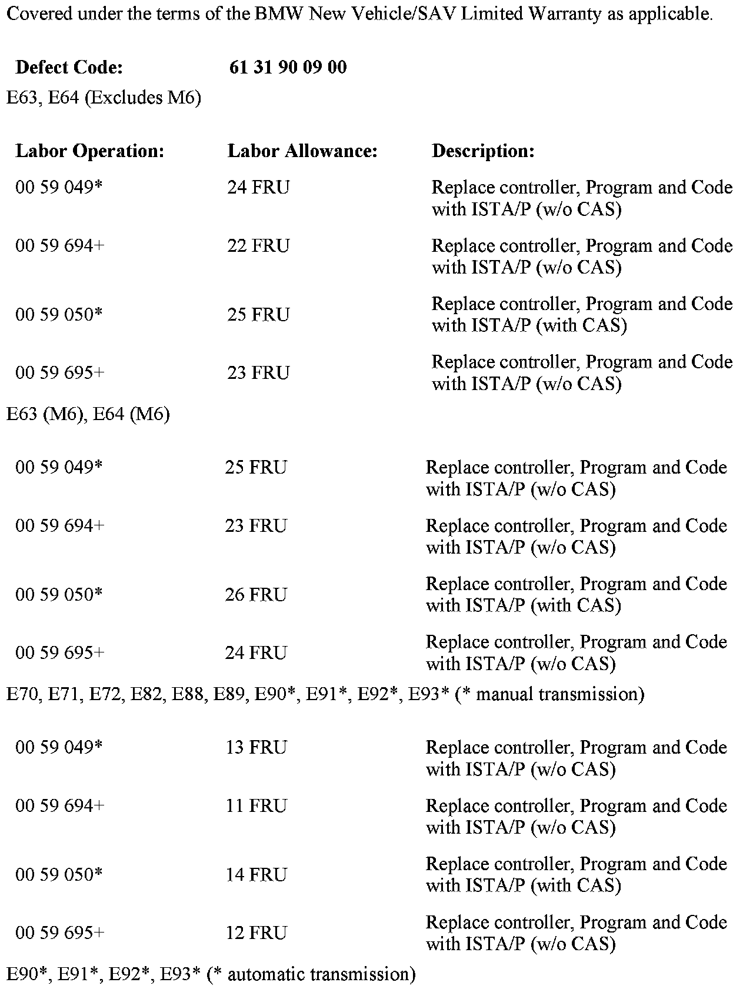
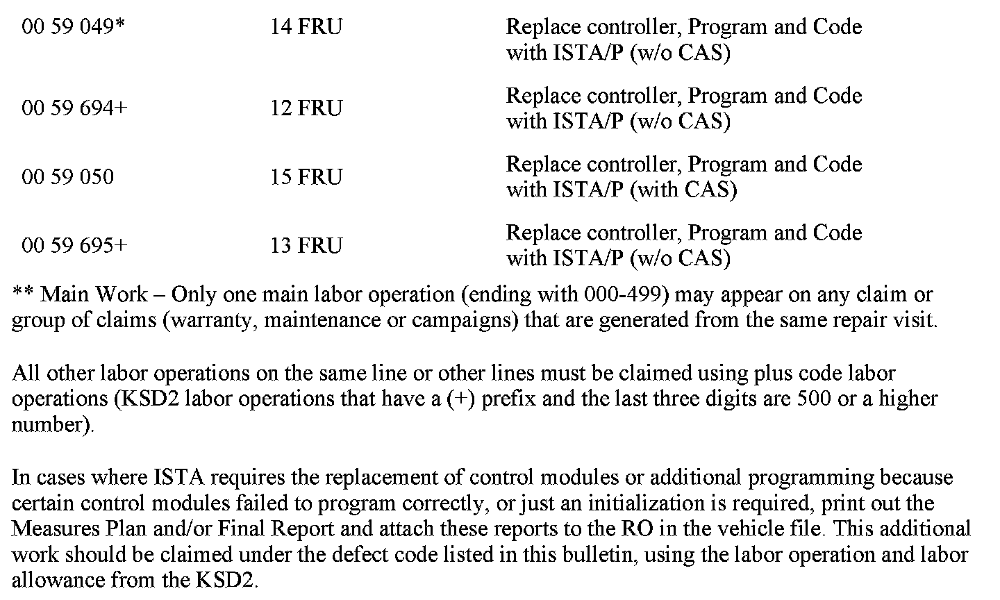

Computers/Controls - Controller Is Inoperative
SI B61 09 10General Electrical Systems
October 2010
Technical Service
SUBJECT
The Controller Is Inoperative, and No Longer Available in Diagnostics
MODEL
E63, E64 (6 Series) from March 1, 2010 to August 31, 2010
E70 (X5) from April 1, 2010 to October 1, 2010
E71, E72 (X6) from April 1, 2010 to October 1, 2010
E82, E88 (1 Series) from March 1, 2010 to September 1, 2010
E89 (Z4) from March 1, 2010 to September 1, 2010
E90, E91, E92, E93 (3 Series) from March 1, 2010 to September 1, 2010
SITUATION
The controller is inoperative and no longer available when using ISTA diagnosis. The affected part numbers are:
^ 65 82 9 231 116
^ 65 82 9 231 117
^ 65 82 9 231 118
^ 65 82 9 231 119
^ 65 82 9 231 120
^ 65 82 9 231 121
CAUSE
The vehicle battery has been discharged to a voltage less than 6.2 volts
CORRECTION
Replace the controller and program the vehicle.
Note that ISTA/P will automatically reprogram and code all programmable control modules that do not have the latest software.
For information on programming and coding with ISTA/P, refer to Centernet / Aftersales Portal / Service / Workshop Technology / Vehicle Programming.
PARTS INFORMATION


WARRANTY INFORMATION